- 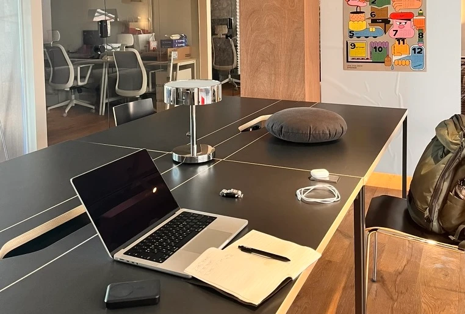
- 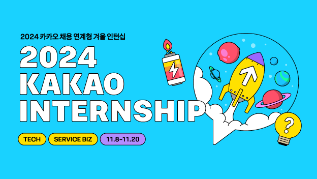
선배 https설정 해주세요. 선배 혹시 traefik도 같이?
그럼 제가 엔진엑스 탕탕 후루후루 탕탕탕 후루루루루
2024년 9월 1일·7개의 댓글- 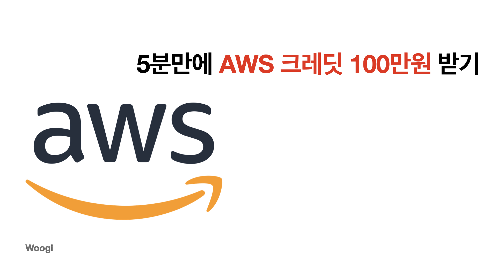
AWS 공짜로 쓰는 법 (프리티어 아님)
프로젝트하면서 언제까지 t2.micro 쓰실건가요?
2024년 9월 4일·2개의 댓글 오빠 오빠 오빠 돈 많아?
오빠 돈 없으면 도커파일 최적화 해야지!
2024년 9월 4일·4개의 댓글- 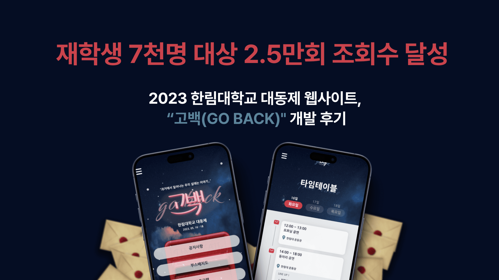
- 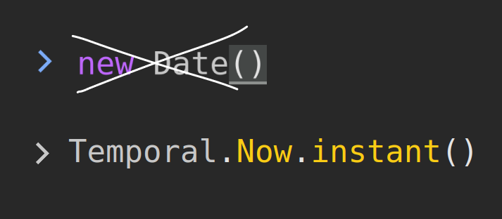
- 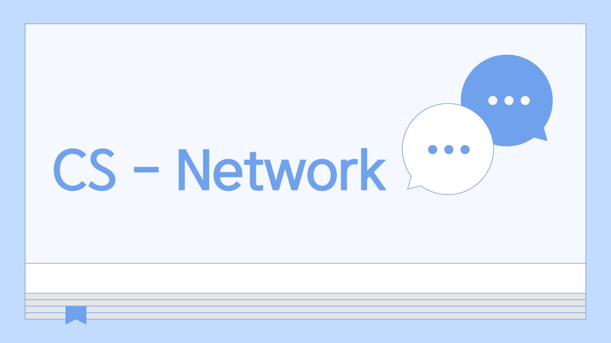
- 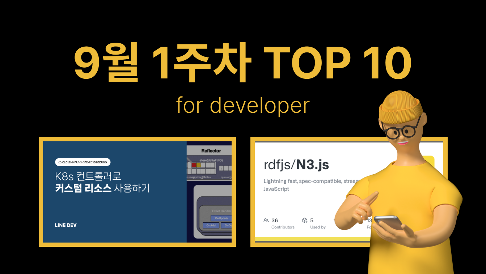
- 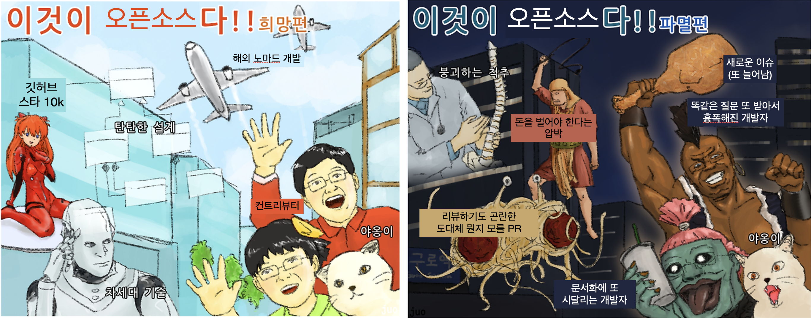
어중간한 오픈소스 프로젝트 개발자의 현실
오픈소스 프로젝트 개발자의 고충에 대한 솔직한 이야기입니다.
2024년 9월 2일·4개의 댓글 .png)
- 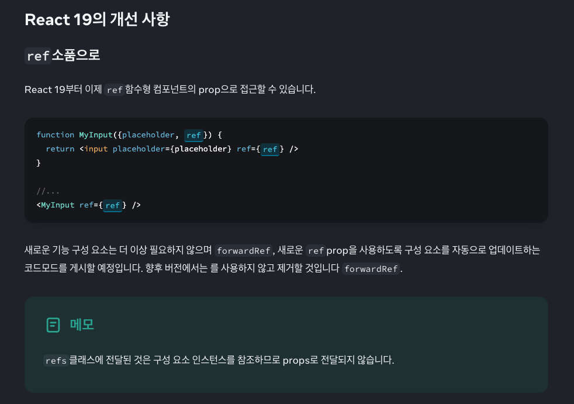
![[토스 프론트엔드 멘토링] Frontend Accelerator 1기 참여 후기 post](./velog_files/image(23).png)
- 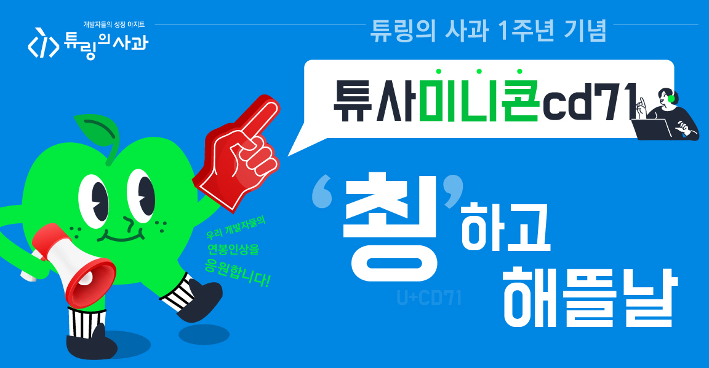
[Linux] 리눅스 명령어 - tee
요즘 이런거 공부해요,,,
7일 전·2개의 댓글[Linux] 리눅스 명령어 - tee
요즘 이런거 공부해요,,,
7일 전·2개의 댓글- 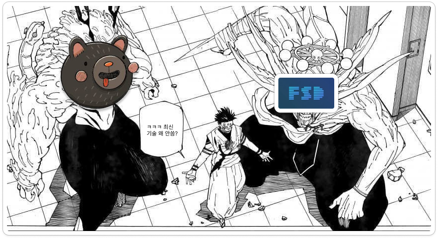
- 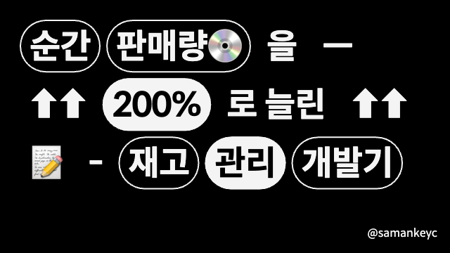
- 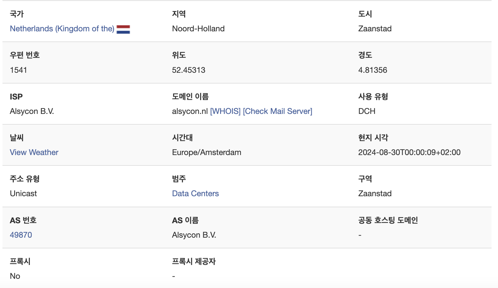
Grafana 로 서비스 접속 기록 분석 해보기
해커들이 어디서 요청을 보내는지 시각화 해보자!
2024년 8월 30일·0개의 댓글 - 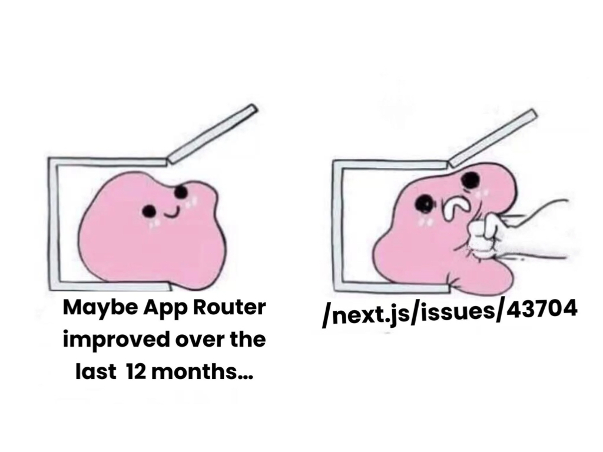
 by 오준상10
by 오준상10.png)
한입 FE 챌린지 2기 참가 안내
한입 FE 챌린지 2기를 통해 강의를 완강해보세요!!
2024년 9월 1일·0개의 댓글[Linux] LVM, 볼륨 관리 기능
리눅스의... 다양한 기능... 너무 다양하다 너
약 16시간 전·0개의 댓글- 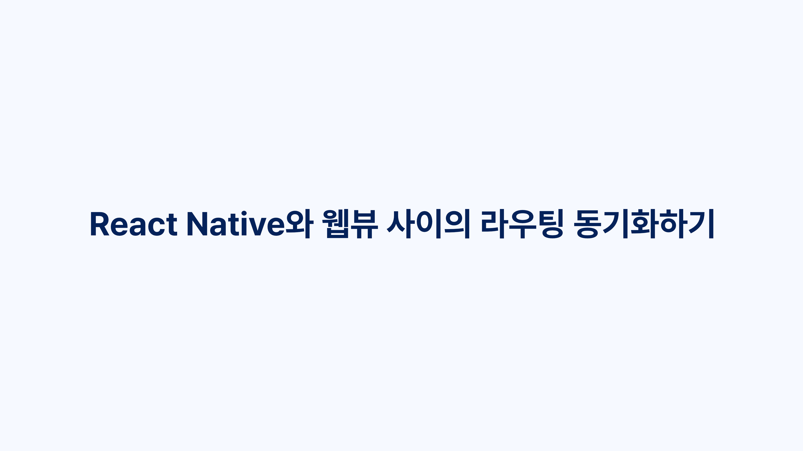
React Native와 웹뷰 사이의 라우팅 동기화하기
React Native와 웹뷰의 라우팅을 어떻게 관리해줘야 할까?
2024년 9월 1일·0개의 댓글 SOLID 하게 리팩토링 (feat.템플릿 콜백 패턴)
솔리드 3집 수록곡 - 천생연분
2024년 8월 31일·0개의 댓글![[TIP] Velog 썸네일 만들기 post](./velog_files/image(45).png)
- 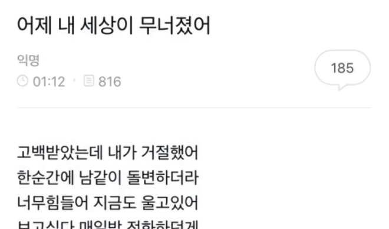
어제 내 도커가 무너졌어.
도커 컴포즈가 어쩌구. 쿠버네티스와 도커 스웜이 저쩌구
2024년 9월 4일·1개의 댓글 - 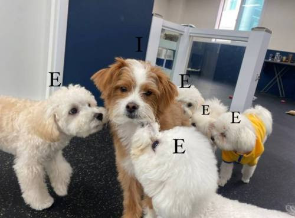
E들 사이에 I가 오프라인 행사에 참여하는 방식
FEConf 2024, 인프런 퇴근길 밋업에 참여하고 작성한 후기입니다.
2024년 9월 1일·0개의 댓글 .png)
- 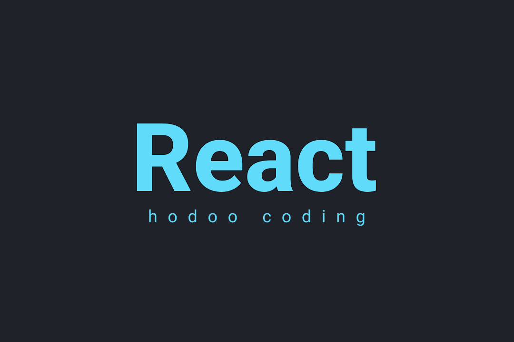
이번 주